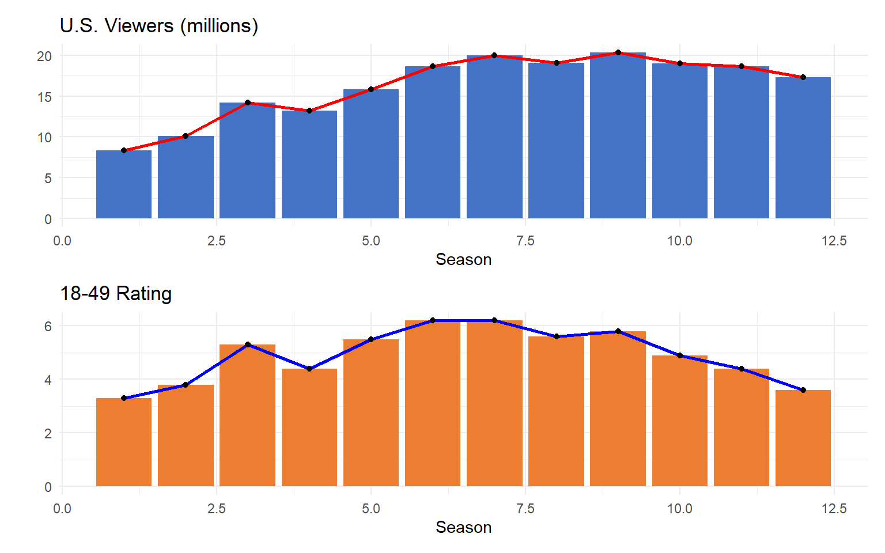
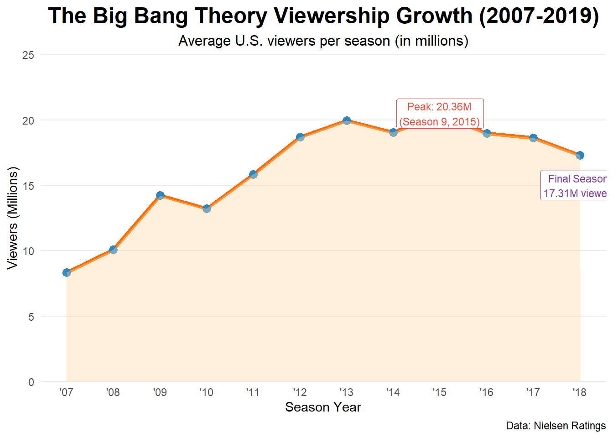
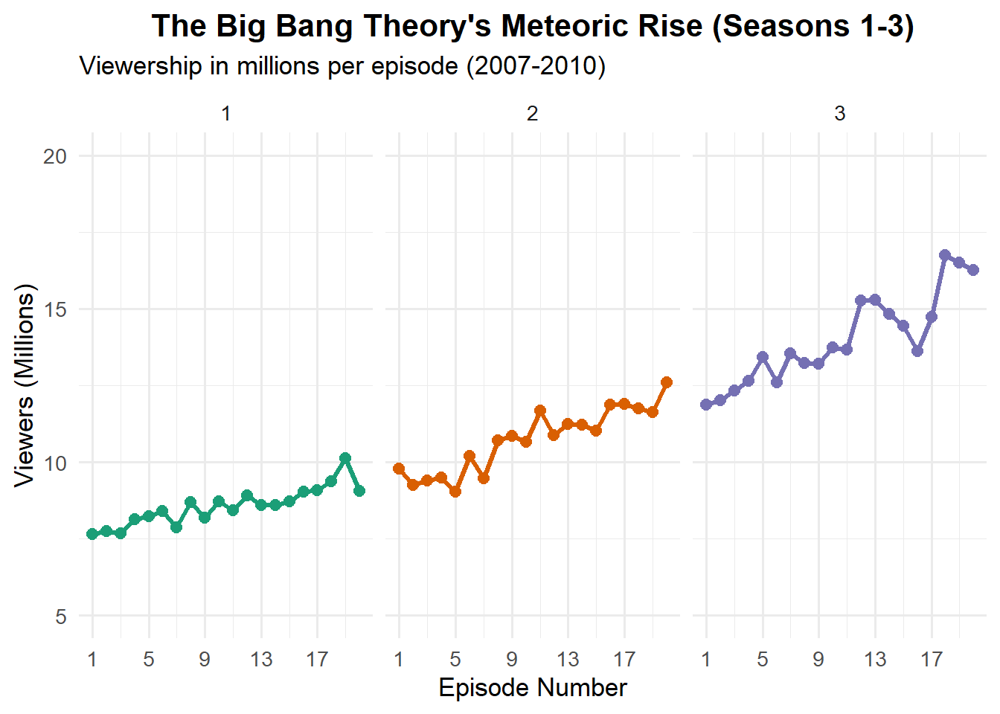
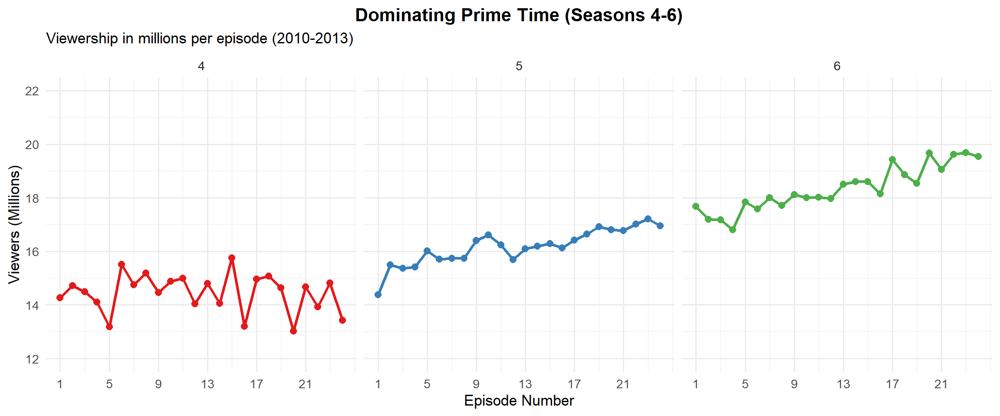
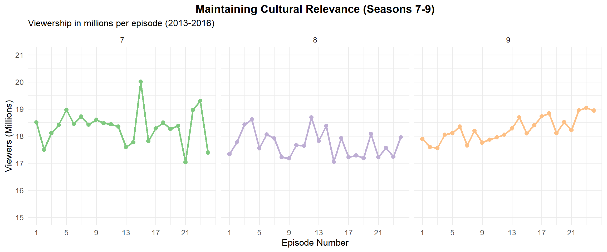
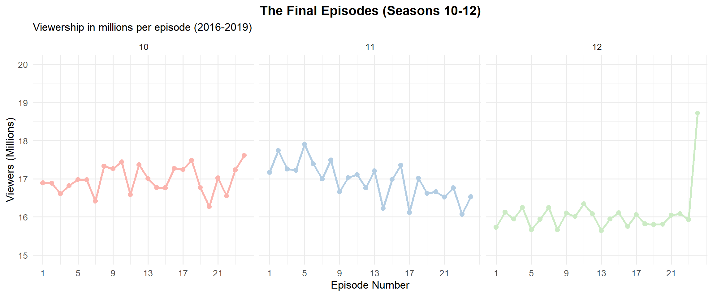

| Metric | Value |
|---|---|
| Peak Viewers (millions) | 20.36 |
| Average Viewers | 16.22 |
| Best Season Rank | 1.00 |
| Highest 18-49 Rating | 6.20 |
| Seasons at #1 Rank | 1.00 |
| Years in Top 3 | 7.00 |
BigBang Theory Viewership
🚀 The Big Bang Theory: Where Geniuses, Nerdy Jokes, and Love Collide! 🎲
Picture this: Two brilliant but socially awkward physicists—Leonard and his eccentric roommate Sheldon—navigate life’s biggest mysteries, from quantum mechanics to why Penny, their gorgeous neighbor, still laughs at their Star Wars references. Throw in Howard’s questionable fashion choices, Raj’s inability to speak to women (unless drunk), and a whole lot of comic books, and you’ve got one of TV’s funniest friend groups!
Over 12 hilarious seasons, The Big Bang Theory turned science geeks into superstars, proving that even geniuses need help with dating, roommates, and surviving Comic-Con. With unforgettable moments—Sheldon’s “Bazinga!,” Howard’s space adventures, and the gang’s endless debates over Star Trek vs. Star Wars—this sitcom became a pop culture phenomenon. And hey, it even spawned spinoffs (Young Sheldon, anyone?), because once you meet these nerds, you just can’t get enough!

| Season | Episodes | Originally released | Viewers rank | U.S. Viewers (millions) | 18–49 rank | 18–49 rating/share | ||
|---|---|---|---|---|---|---|---|---|
| First released | Last released | |||||||
| 1 | 17 | September 24, 2007 | May 19, 2008 | 68 | 8.34 | 46 | 3.3/8 | |
| 2 | 23 | September 22, 2008 | May 11, 2009 | 40 | 10.07 | 22 | 3.8 | |
| 3 | 23 | September 21, 2009 | May 24, 2010 | 12 | 14.22 | 5 | 5.3/13 | |
| 4 | 24 | September 23, 2010 | May 19, 2011 | 13 | 13.21 | 7 | 4.4/13 | |
| 5 | 24 | September 22, 2011 | May 10, 2012 | 8 | 15.82 | 6 | 5.5/17 | |
| 6 | 24 | September 27, 2012 | May 16, 2013 | 3 | 18.68 | 2 | 6.2/19 | |
| 7 | 24 | September 26, 2013 | May 15, 2014 | 2 | 19.96 | 2 | 6.2/20 | |
| 8 | 24 | September 22, 2014 | May 7, 2015 | 2 | 19.05 | 4 | 5.6/17 | |
| 9 | 24 | September 21, 2015 | May 12, 2016 | 2 | 20.36 | 3 | 5.8/19 | |
| 10 | 24 | September 19, 2016 | May 11, 2017 | 2 | 18.99 | 3 | 4.9/19 | |
| 11 | 24 | September 25, 2017 | May 10, 2018 | 1 | 18.63 | 5 | 4.4 | |
| 12 | 24 | September 24, 2018 | May 16, 2019 | 2 | 17.31 | 6 | 3.6 |






The evidence above shows that the Tv show started off pretty modestly in Season 1 with around 8.34 million viewers, but it picked up steam fast. By Season 2, it was already pulling in over 10 million, and then Season 3 really blew up with 14.22 million viewers. You could tell it was starting to find its audience early on.
From Seasons 4 to 7, the show just kept getting bigger. There was a little dip in Season 4 down to 13.21 million, but after that, it skyrocketed. Season 5 jumped to almost 16 million, then Season 6 hit 18.68 million, and Season 7 peaked with just under 20 million viewers. Those seasons were definitely the show’s golden years.
From Season 8 onwards, the numbers stayed strong but started to slowly drop off. Season 8 dipped slightly, but Season 9 actually hit the highest viewership yet with 20.36 million. After that though, starting in Season 10, there was a gradual decline — 18.99 million, then 18.63 million, and finally 17.31 million in the last season. Even with the slight drop, it stayed one of the biggest shows on TV right up until the end.